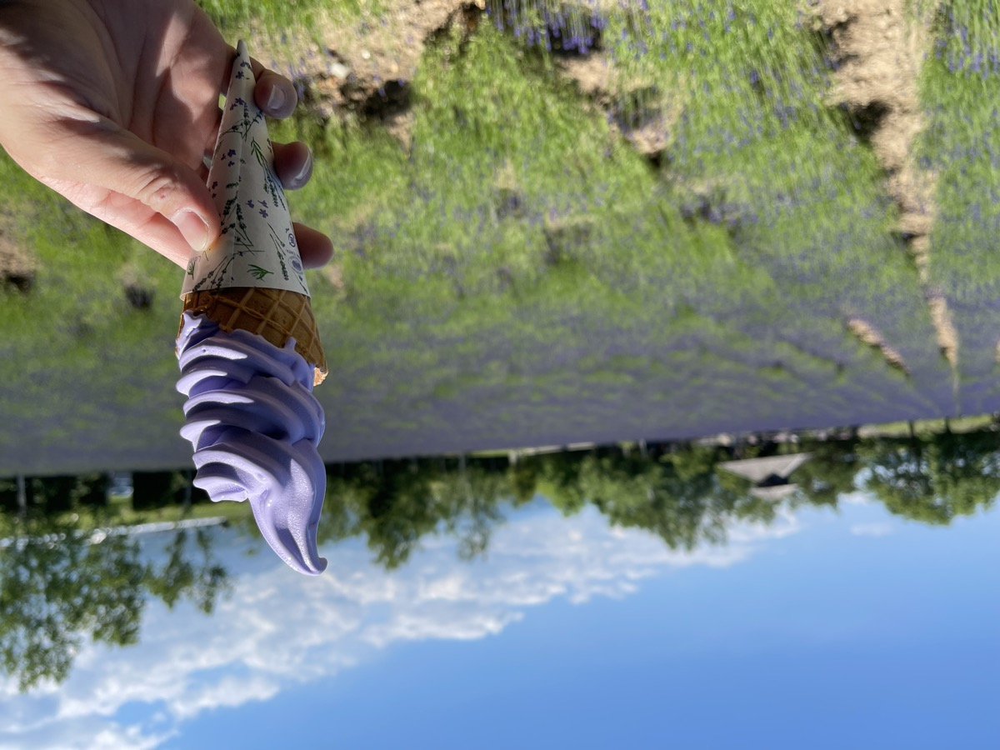
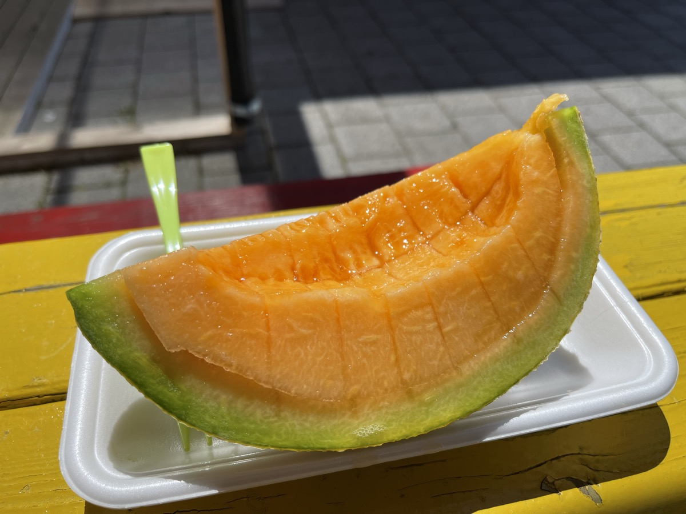
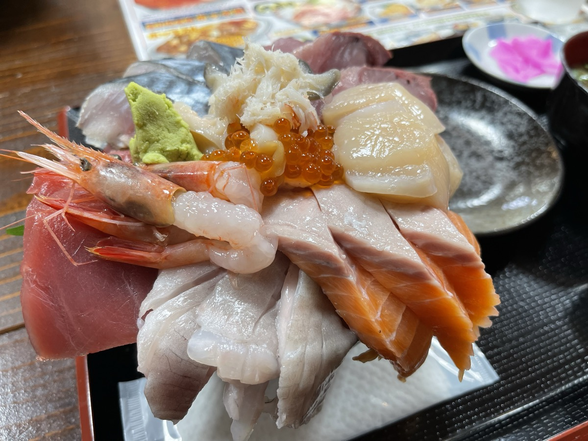

Último día del viaje a Hokkaidō. Salir de Biei, ver la lavanda de Furano y, desde Tomakomai, volver a Ōarai en el Sunflower. Hago el equipaje y cargo el último depósito en la SR400.
Saliendo de Biei hacia Furano
Un trayecto corto al sur desde Biei lleva a Furano. La temporada alta de la lavanda es julio, pero a finales de junio algunas variedades ya estaban abriendo.
La lavanda de Farm Tomita
Los campos de lavanda de Farm Tomita eran mucho más grandes de lo que esperaba. Una alfombra morada hasta perderse de vista: paisaje muy de Hokkaidō.

El famoso helado de lavanda: aroma sutil, postre muy del verano de Hokkaidō.

Melón Yūbari en un área de servicio
Tras Furano, autopista hacia Tomakomai. En una área de servicio compré un melón Yūbari, un último golpe de dulzor muy de Hokkaidō.

Un último kaisen-don en Tomakomai
Como tenía tiempo antes del ferry desde el puerto oeste de Tomakomai, fui a un local de marisco cercano y pedí un kaisen-don generoso. Atún, langostinos, salmón, vieira, erizo y huevas de salmón. Una última probada del mar de Hokkaidō, y luego al ferry.

Sunflower de vuelta a Ōarai
En el puerto oeste amarraron la SR400 y subí al camarote. Tras zarpar, salí a cubierta: la costa de Hokkaidō se iba alejando.

Mirando cómo se alejaba la tierra, ya estaba dándole vueltas al siguiente plan. Shiretoko. Rodar los humedales del este. Cruzar a Rishiri y Rebun. Sitios pendientes a montones.
Hokkaidō es enorme. Mientras la SR400 me siga llevando, quiero más, pensaba mientras desembarcábamos en Ōarai a la mañana siguiente.
Si puedes, ve a la línea Esanuka. Las fotos no le hacen justicia. Aunque no seas motorista, plantarse delante de esa carretera cambia algo.
Como apunte posterior: en 2022 di una vuelta por el sur en coche y en 2025 hice la vuelta entera, incluido el este, con una XSR900. Los paisajes que la SR400 no alcanzó, los estoy persiguiendo ahora.
▶ Continuación: Ōarai → Tomakomai en el Sunflower [XSR900 Hokkaidō ①] (JA)
▶ Relacionado: tres viajes a Hokkaidō — rutas y alojamientos en SR400, coche y XSR900